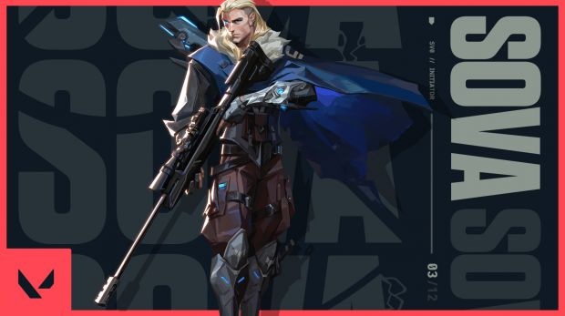
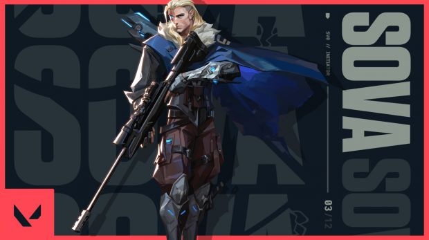
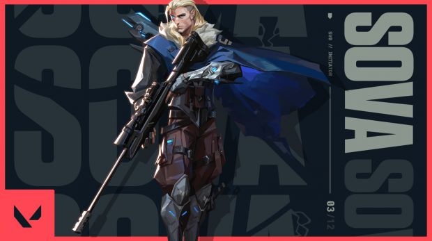

Les Agents
12 agents sont actuellement jouables dans Valorant. Ils comprennent :
- Phoenix
- Jett
- Viper
- Sova
- Cypher
- Brimstone
- Sage
- Breach
- Omen
- Raze
- Reyna
- Killjoy
Phoenix
Jett
Viper
Sova
 

Cypher
Brimstone
Sage
Breach
crée par Riot Games
Valorant est un jeu vidéo free-to-play de tir à la première personne en multijoueur développé et édité par Riot Games et sorti le 2 juin 2020.
Deux équipes de cinq joueurs s'affrontent, chacun joue le rôle d'un « agent » aux compétences uniques et utilise un système économique pour acheter des utilitaires et des armes.
Dans le mode de jeu principal, une équipe est attaquante et une est en défense : l'équipe attaquante dispose d'une bombe qu'elle doit poser sur un site. Si elle est suffisamment protégée et qu'elle explose, les attaquants gagnent un point. En revanche, si l'équipe en défense réussit à désamorcer la bombe ou si le temps est écoulé, ce sont eux qui gagnent un point. L'élimination de tous les membres de l'équipe adverse entraine également une victoire pour le tour. La première équipe qui obtient treize points gagne la partie.
Un deuxième mode de jeu, Spike Rush, est présent et consiste en une partie beaucoup plus rapide, avec des armes aléatoires et un maximum de seulement sept manches.
Enfin, un troisième mode de jeu, Deathmatch, est présent en version bêta et il s'agit d'un mode de jeu en chacun pour soi où l'Agent joué est aléatoire, le but n'est plus de poser ou désamorcer une bombe mais d'effectuer un maximum d'éliminations, le premier à en obtenir 30 dans les 6 minutes imparties remportant la partie
12 agents sont actuellement jouables dans Valorant. Ils comprennent :
Phoenix
Jett
Viper
Sova

Cypher
Brimstone
Sage
Breach